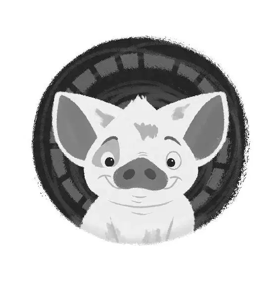

Maui put a hand up to the night sky, positioning the stars in the curve of his hand and between his fingers to create a guide. Reading it like a map, he measured the distance between the stars and the horizon. He put his other hand in the ocean to feel the direction of the current. Moana watched, fascinated, as he figured out which way to go.
“We go east, to the lair of Tamatoa,” said Maui. “If anyone has my hook, it’s that beady-eyed bottom-feeder.”
With one mighty pull, Maui filled the sail with air and the boat jerked, forcing Moana to hang on tightly. Maui swung the sail around and then quickly tied a knot.
Intrigued, Moana watched his every move, eager to learn. “Teach me to sail,” she said, inches away from his face.
“Wayfind, princess. What I do is called wayfinding, and it’s not just sails and knots; it’s seeing where you’re going in your mind ... knowing where you are by knowing where you’ve been... .”
“Okay, first, not a princess. I am the daughter of the chief—”
“Same difference.”
“No—”
“If girls want to wear your dress, you’re a princess—you are not a wayfinder. You will never be a wayfinder. You will never be a wayfinder,” Maui said as if he were stating three separate facts.
Maui picked up Moana and placed her in the cargo hold with Heihei. Then the ocean spit out one of the Kakamora’s poisonous darts and sank it right into Maui’s butt.
“Really?” Maui said to the ocean. “Blow dart in my butt cheek?”
Maui crumpled to the deck in a heap. Everything but his head was paralyzed. Moana smiled.
“You are a bad person,” said Maui, with his face smooshed against the floor of the boat.
“If you can talk, you can teach,” said Moana. “Wayfinding, lesson one ... Hit it.”
Maui grunted in protest.
“Untie the halyard,” said Maui. Moana chose a rope and began to untie it. “Not the halyard,” said Maui bluntly. She tried another rope, and Maui said, “Nope.” Each rope she tried was the wrong one.
Moments later, Moana stretched her arm up and raised her hand to the sky as she tried to read the stars. She moved her hand back and forth, trying to get it right. “You’re measuring stars, not giving the sky a high five,” Maui said with disgust.
Moana put her hand in the water. “If the current’s warm, you’re going the right way,” said Maui.
“It’s cold... . Wait, it’s getting warmer!”
Maui cackled.
“Ew, disgusting! What is wrong with you?” said Moana, whipping her hand out of the water.
Moana continued into the night, trying her best to follow Maui’s instructions.
The next morning, Moana saw that they were approaching a beautiful green island. “We’re here? Maui? See? Told you I could do it!” she said excitedly.
Maui snored. He was fast asleep. Moana looked at the island and realized it was Motunui. “Motunui ... but ... I’m home?” she said, confused.
Then, right before her eyes, the lush island turned black, and everything started to shrivel and die. She could see Tui and Sina standing on the island as it deteriorated. They looked terrified and were calling to her for help, but she couldn’t get to them.
Moana jerked awake and caught her breath. She looked around, thankful that the whole vision had just been a bad dream.
“Enjoy your beauty rest?” asked Maui sarcastically. The blow dart’s effects had finally worn off and he was up and about again. “A real wayfinder never sleeps, so they actually get where they need to go.”
A large seabird squawked as it flew overhead, catching Moana’s and Maui’s attention. They watched as it flapped toward a huge, towering, rock-spired island that stretched into the blue sky.
“Muscle up, buttercup,” said Maui. “We’re here.” The boat reached the rocky shore at the base of the spire, and Maui tied it up.
“You sure this guy’s gonna have your hook?” Moana asked.
“Tamatoa? He’ll have it. He’s a scavenger. Collects stuff, thinks it makes him look cool.”
Maui sprinkled a pile of seeds in front of Heihei, still hoping to fatten him up. Heihei pecked away, missing each and every one. Maui placed him in front of a seed and pushed his head down, starting him up like a little toy. Heihei bobbed up and down, pecking at the seed.
“And he lives up there?” asked Moana, staring up at the mile-high spire.
Maui chuckled. “What? Oh no, that’s just the entrance. To Lalotai.”
“Lalotai? Realm of monsters?” Moana asked nervously. “We’re going to the realm of monsters?”
“We? No. Me. You’re going to stay here ... with the other chicken. Bagock!” Maui held up a hand to Mini Maui, expecting a high five. “Gimme some,” he said. But the tattoo didn’t respond. “Nothing?” Giving up, Maui jumped onto the cliff wall and began to climb, talking to Mini Maui along the way. “How do you not get it? I called her a chicken; there’s a chicken on the boat. I know she’s human, but—never mind, I’m not explaining it to you.” Maui eyed Mini Maui and added, “’Cause then it’s not funny!”
Moana watched, annoyed, as Maui scaled the spire. She was not about to let him tell her where to stay or what to do. Moana held her necklace close for courage as she prepared to follow Maui to Lalotai.
